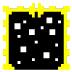

There are 10 kinds of secret rooms hidden in the maze. Some of them hold Power Orbs, some of them hold other
treasures. Knowing how to find each one, and what it holds, is critical to your success!

Each one can only be reached by stepping though a portal, but where are those portals hidden?
Every room will have about 1 point of Hazards for every 10 previous rooms. Hazards will be selected from the following list until all points are expended:
| Lucky | 1 point |
No additional dangers. You probably won't notice when you get these, because they only take up one point and other hazards can still vex you. All the same, try to appreciate them! |
|---|---|---|
| Extra Traps | 2 points | Additional traps will be hidden in the room. |
| Hidden Traps | 1 point | Traps are 15% harder to find. |
| Iron Blocks | 1 point | Unbreakable blocks will make up some of the walls. |
| Burning | 2 points | The room will catch fire. More fires will appear the longer you spend in the room. |
| Long Grass | 1 point | Patches of grass full of dangerous (or at least annoying) bugs will block your path. |
| River | 1 point | Some water runs through this room. Each time you step in it an additional monster will appear. |
| More Switches | 1 point | You'll have to push extra buttons to unlock the stairs. |
| Stronger Monsters | 1 point | Each monster in this room gets a 50% boost to its HP. |
| Low Energy Zone | 2 points | Your MP will deplete as you move. |
| Potion Failure | 2 points | Lose 1 potion. |
| Darkness | 1 point | You won't be able to see the entire room before you explore it. |
| Growing Darkness | 2 points | Random spots in the room will become unexplored as you move. |
| Sun Spots | 1 point | Blocks of solar energy will move around randomly, dealing damage to you on contact. |
| Switch Trap | 1 point | Fake buttons that trigger saw-blades are mixed in with the real ones. |
| Arena | 2 points | The stairs will not unlock until you defeat some number of monsters. |
| Birds | 2 points | A swarm of birds will get in your way. If you attack from a space with birds in it, you'll only deal 1 damage no matter how high your Atk is. |
| Troll Nearby | 1 point | The time you have until the Troll appears is cut in half. |
| Swamp | 1 point | Patches of Swamp that grow when stepped on will block your way. Each time you step on swamp, you'll lose an XP point. If you have no XP left to lose, you'll lose HP and MP. (The swamp will never take you last point of HP.) |
| Ice Patch | 1 point | Ice patches will be in the room. On its own ice is harmless, but is said to attract snowmen... |
Each of the Power Orbs grants its holder a special power. You can choose when to try to activate the Orbs, but you can't choose the power. Each power has its own conditions for being available. Whichever power you use, you can activate the Orbs once per room, so try them often!
|
Empower |
Gain 3 stacks of damage resistance and cure all debuffs except poison. |
This power will usually be available. | |
|---|---|---|---|
|
Banish |
Remove all monsters from the room. |
This power becomes available when 16 or more monsters are in the room and you hold 2 or more Orbs. | |
|
Calm the Waters |
Calm the waters, removing all whirlpools and allowing you to move freely. |
This power is only available underwater while holding 3 or more Orbs. | |
|
Potion to Key |
Turn one of your potions into a key. |
This power can manifest when you have more than zero potions, less than two keys, and hold at least 4 Orbs. | |
|
Daylight |
Remove all clouds of darkness. |
This power will be available when 20 or more tiles are covored in darkness and you hold at least 5 Orbs. | |
|
Remove Birds |
Each bird has a 66% chance of vanishing. |
This power will be available when birds are on the screen and you hold at least 6 Orbs. | |
|
Open |
Open the way in room 100. |
Stand in room 100 while holding all 7 Power Orbs to open the path. God be with you. |